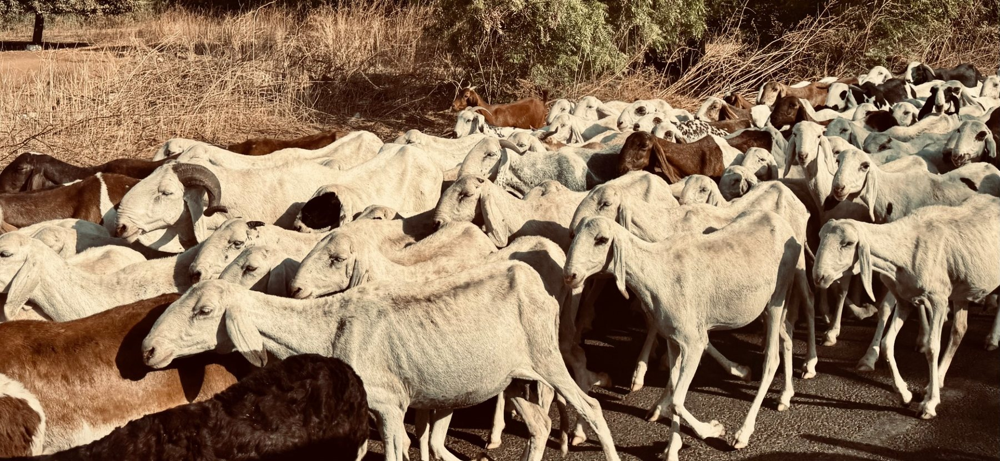
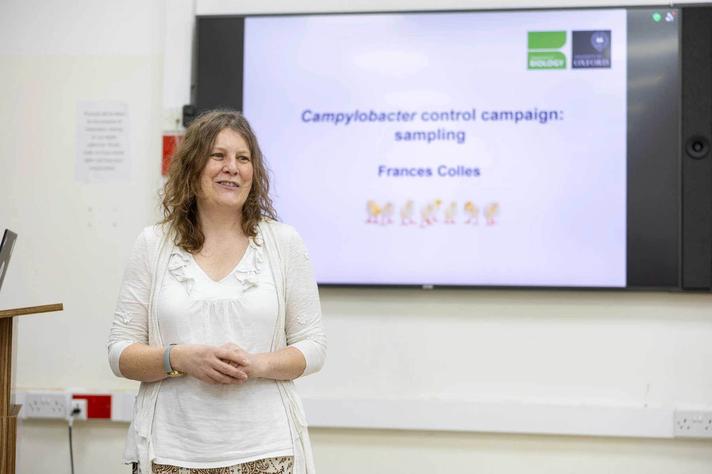

Échantillonner
Étudier ensemble les personnes, les animaux, l’eau et les environnements.
 Campylobacter Control Campaign
Campylobacter Control CampaignProgramme de recherche
D’où vient l’exposition à Campylobacter, quelles voies de transmission comptent le plus et où la prévention peut-elle avoir le plus d’impact ?
Notre approche
CCC relie les études de terrain « One Health » à la génomique, à l’épidémiologie et à la modélisation afin de transformer la surveillance en décisions concrètes.
Étudier ensemble les personnes, les animaux, l’eau et les environnements.
Caractériser les isolats, les métagénomes, la diversité des pathogènes et la antibiorésistance.
Utiliser la génomique et l’apprentissage automatique pour identifier les sources probables.
Combiner les données scientifiques et les connaissances locales pour comparer les voies de transmission et les interventions.
Prioriser des interventions en amont réalisables, notamment sur l’eau, l’élevage et les stratégies éclairées par la vaccination.


Résultats attendus
Quelles voies humaines, animales et environnementales contribuent le plus à l’exposition et à la maladie ?
Quels réservoirs, lignées de pathogènes et profils de résistance sont les plus importants dans chaque contexte ?
Quelles modifications réalistes localement sont les plus susceptibles de réduire la transmission ?
Méthodes et ressources
Les protocoles d’étude, méthodes de laboratoire et ressources d’analyse sont partagés afin que les approches puissent être reproduites et adaptées sur les sites partenaires de CCC.